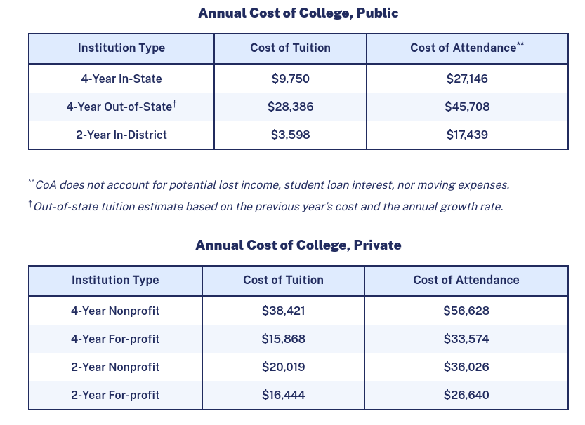

Why graduate early?
University is expensive.
- The average cost of a public, four year in-state university bachelors degree is $108,584.
- At 40 classes for a 120 credit degree, that's $2714 per class on average.
- At a public university housing is typically the primary expense with tuition a close second.
- At a private or out-of-state university tuition can be triple or more than an in-state public university.
- Considering the average person does not graduate in four years, college can put you in debt for life even at a public in-state university!
- See the costs for yourself. https://educationdata.org/average-cost-of-college.

Early graduation isn't hard!
There are thousands of ways to get an advantage and finish faster. I know because I finished university four years early. (starting with 40+ credits and spending only one and a half years in university itself.)
- The earlier you start, the sooner you can graduate. In elementary, middle, or high school you can graduate early or skip entire grades by just asking a counselor. This won't save you money from university classes, however, and my negatively impact social development.
- If you are still in high school, you have the most options. It is very reasonable to enter college as a sophomore with 30+ credits from the abundance of opportunity to acquire them.
- If you are already in college you can still save plenty of time and money by getting credits outside from your university and compressing your courseload.
- By stacking every method you can halve your time and money spent in college.
- With minimal effort you can graduate in three years instead of four or five and save tens of thousands in tuition.
I will personally tell you how to do it.
I graduated from college at 18 years old, had 40+ credits before I even started, and had a 3.96 GPA when I finished.
- I host webinars regularly.
- Nowhere else on the internet is there as dense a concentration of knowledge on early graduation as there is here.
- Nowhere else on the internet exist the original methods I used to get high grades with a high number of classes and low effort.
- Nowhere else on the internet exists someone who knows every step of the way from personal experience and will explain it directly.